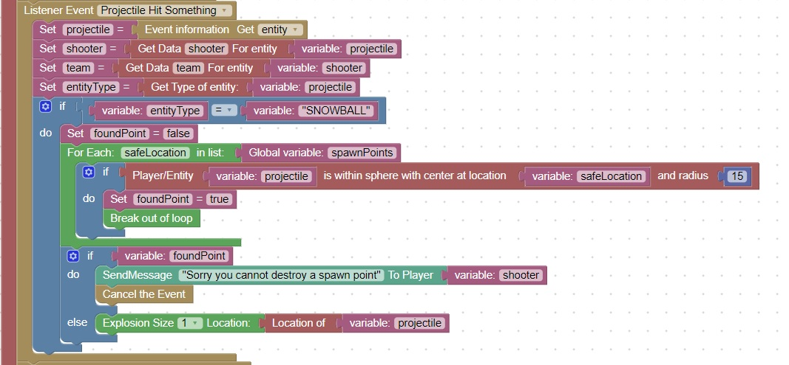

Protect Spawn Points from explosive damage
Players will accidentally try to explode spawn points and signs
Since an explosion is not considered a block break, another method needs to be used to protect these locations
This code will check when a projectile hit event occurs, if it occurs near a spawn point
